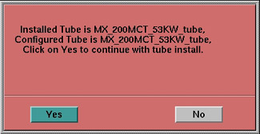

Proprietary to General Electric
Direction 5114043-800, Rev# 9
LightSpeed 3.X Service Methods (Advanced)
Proprietary to General Electric |
| Last Revised: | 20 November 2008 |
This module covers the replacement procedure for X-ray tubes.
The steps and modules listed below provide the details for the Standard Tube Replacement process. For Quick Tube Change procedure details, please refer to Direction 2394243-100, LightSpeed Quick Tube Change Procedure.
High Voltage Generator Checks and Calibrations
DAS Gain Calibration
Perform DAS Gain Calibration by selecting the function from Scanner Utilities (left head).
Select [SCANNER UTILITIES] , and Select DAS GAIN CALIBRATION.
Ensure that there is nothing in the x-ray beam and continue.
The system will now perform a Mylar window check and provide the appropriate messages if the window should need cleaning.
Upon completion of the Mylar window scans the system will now take 31 scans and save the results in the Calibration Data Base. The system will provide the appropriate messages if the calibration should fail.
Collimator Calibration
Perform Collimator Calibration by selecting the function from Scanner Utilities (left head).
Select [SCANNER UTILITIES] , and Select [COLLIMATOR GAIN CALIBRATION] .
Ensure that there is nothing in the x-ray beam and continue.
The system will now perform a Mylar window check if needed and provide the appropriate messages if the window should need cleaning.
Upon completion of the Mylar window scans the system will now take 8 scans and save the results in the Calibration Data Base. The system will provide the appropriate messages if the calibration should fail.
New Tube Configuration
Select [SERVICE DESKTOP] .
Select [REPLACEMENT] .
Select [TUBE CHANGE] .
Select [TUBE DISPLAY] and record the values.
Select [NEW TUBE CONFIG] .
Select [SCAN HARDWARE RESET] and reset Application <SCAN>.
Select [NEW TUBE SEED SHIFT] .
Verify tube types match before proceeding.
Illustration 1: Install New Tube Configuration Check

Perform Tube Installation Certification, if needed. Refer to SmarTube™ Setup.